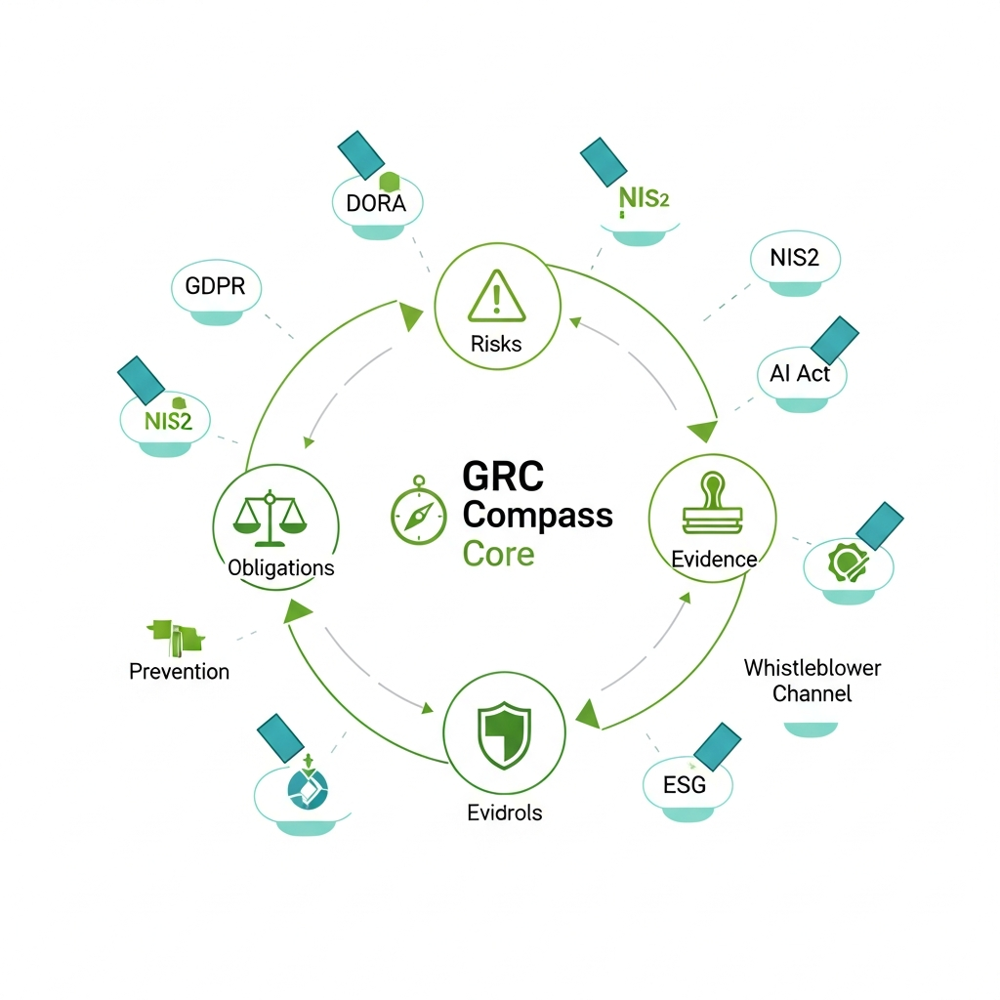

Garrigues asesora e inyecta cumplimiento en el sistema (skills, guardarriles, gobernanza). g-digital aporta los productos: desde la Consola GRC de conformidad con el RIA e ISO 42001, hasta los servicios integrados de confianza digital para el ciclo de vida del dato y el comportamiento del sistema de IA.
La Agencia IA Legal de Garrigues opera en tres capas complementarias. Garrigues asesora. g-digital construye los productos. Trust API certifica la evidencia.
Inyecta cumplimiento en el sistema de IA. Diseno de skills dedicadas, guardarriles, politicas de gobernanza, evaluacion de riesgos por nivel AI Act, y acompanamiento regulatorio continuo.
Productos de gobernanza que dan soporte al cumplimiento: desde la Consola GRC de conformidad con el RIA e ISO 42001, hasta AIMS Console para registro y monitoreo de sistemas IA.
Servicios integrados de confianza digital para asegurar el cumplimiento del ciclo de vida del dato y el comportamiento del sistema de IA. Evidencia cualificada eIDAS irrefutable ante reguladores.
Plataforma para registrar, clasificar y monitorizar la conformidad de sistemas de Inteligencia Artificial.
Catalogo completo de todos los sistemas de IA en la organizacion.
Categorizacion por nivel de riesgo y cumplimiento normativo.
Seguimiento continuo del rendimiento y conformidad regulatoria.
Documentacion y trazabilidad de conformidad. Auditoria WORM.
Suite de asistentes digitales inteligentes especializados en tareas juridicas.
Asistentes desarrollados con: NLP especializado en lenguaje juridico · Modelos GPT entrenados sobre jurisprudencia y normativa espanola · Co-desarrollados con abogados de Garrigues · Servicios legales productivizados e inteligentes.
Gobernanza, Riesgo y Cumplimiento. Modelo integral: Obligaciones → Riesgos → Controles → Evidencias → Incidencias.
16
Modulos especializados
31
Roles RBAC
WORM
Audit inmutable
RLS
Multi-Tenant

Descubre como nuestras soluciones de IA aplicada al derecho pueden mejorar tu cumplimiento y productividad.
Solicitar Demo